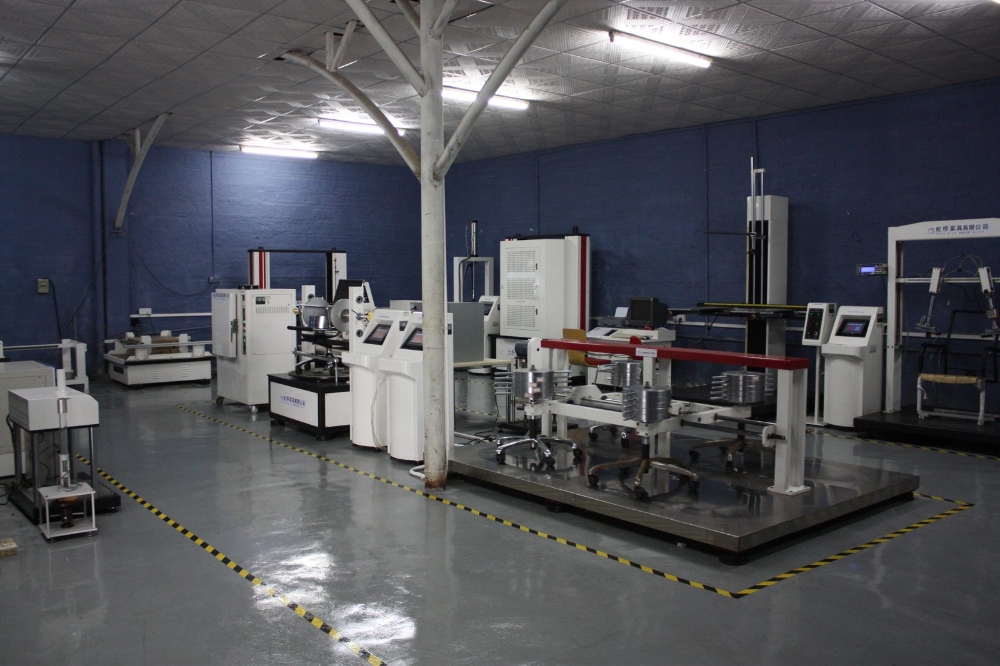

Quality Testing
对企业办公、学校、医养、机场高铁等项目客户来说，产品稳定性、结构安全和长期耐用性，比单件低价更重要。
用于呈现虹桥对原材料、结构和成品品质控制的重视。

办公椅底座和结构件检测，支撑长期使用稳定性。
围绕办公椅核心部件，强化安全、耐用和工程交付信任。
FAQ
工程项目需要批量稳定使用，真正影响客户体验的是结构安全、材料稳定、交付周期和售后响应。检测实力可以降低后期风险。